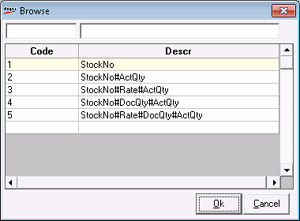

When it is not very practical to physically bring the items near the POS counter for scanning or if the location where the goods are received is different from the POS counter where the inward entry is done, a Portable Data Terminal is used to scan and create PDT files. To read the PDT files for updating the stock use this option.
If the parameter is not set to use default format, then the following window is displayed. Selecting Load PDT File option displays the list of available formats. Select the required format from the list.
